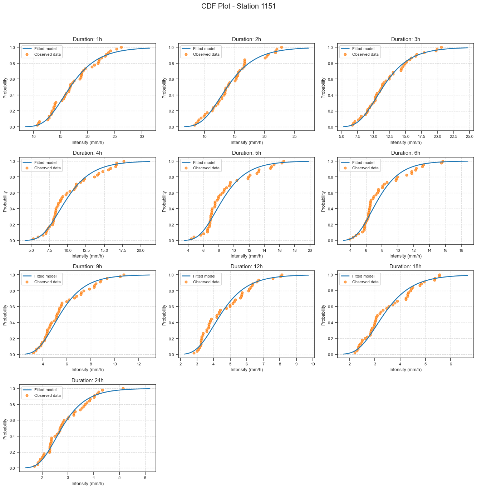
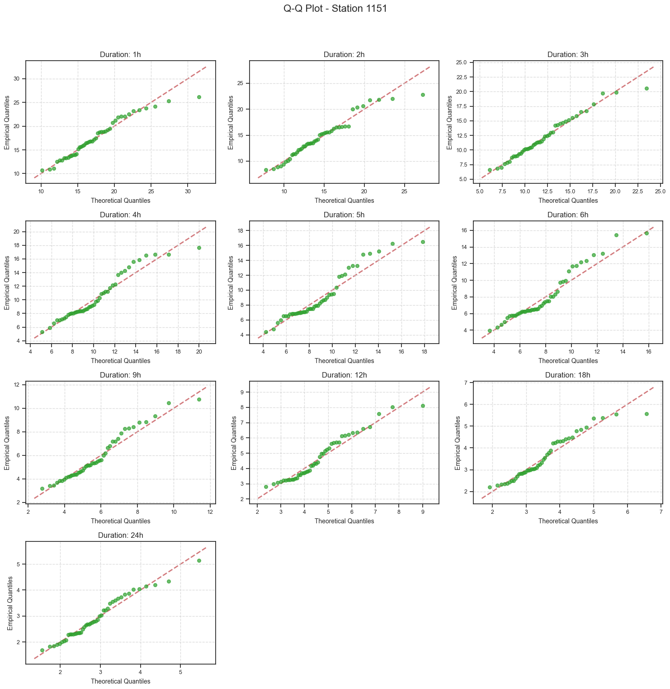
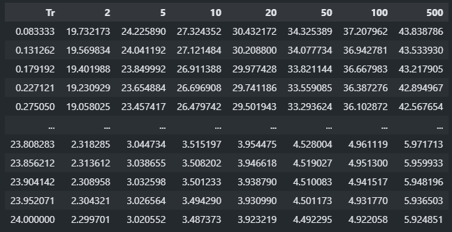
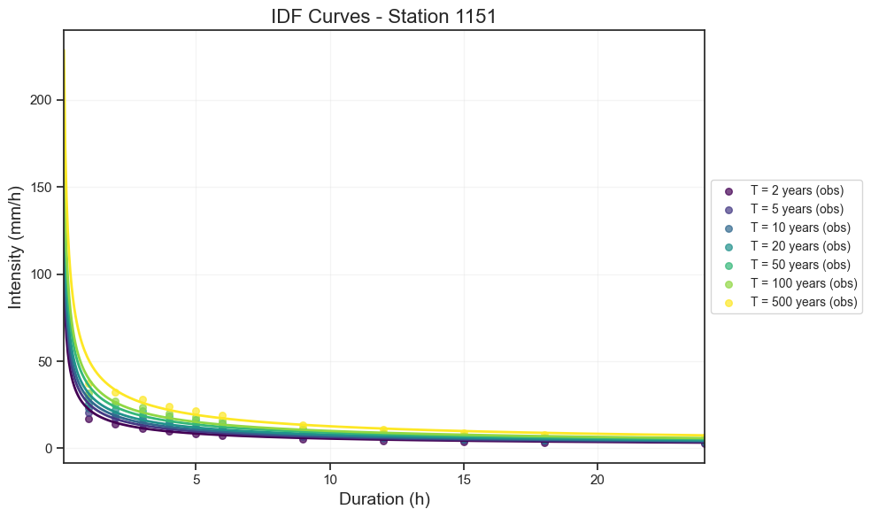

IDF Analysis Tool
Table of Contents
- IDF Analysis Tool
Introduction
The IDF Analysis Tool is a Python-based solution for performing Intensity-Duration-Frequency (IDF) analysis on rainfall data. This tool encapsulates methods for calculating annual maximum intensities, fitting statistical models, generating IDF curves, and plotting results.
IDF analysis is crucial in hydrological studies and water resource management, providing essential information for the design of drainage systems, flood control structures, and other water-related infrastructure.
Installation
To use the IDF Analysis Tool, you need to have Python installed on your system. Additionally, you’ll need to install the following dependencies:
pip install pandas numpy scipy matplotlib fitter statsmodelsYou’ll also need to ensure you have the Julia_Genextreme module available in your Python environment.
Usage
To use the IDF Analysis Tool, you need to import the IDFAnalysis class from the module:
from idf_analysis import IDFAnalysisClass: IDFAnalysis
The IDFAnalysis class is the core of this tool. It takes the following parameters during initialization:
historic_hourly: A pandas DataFrame containing historical hourly rainfall data.Durations: A numpy array of durations to analyze (in hours).Return_periods: A numpy array of return periods to calculate.distribution: The statistical distribution to use for fitting (default is ‘genextreme’).model: The model engine to use for fitting (‘scipy_stats’ or ‘Julia_stats’, default is ‘scipy_stats’).method: The method for fitting IDF curves (‘curve_fit’ or ‘least_squares’, default is ‘curve_fit’).IDF_type: The type of IDF equation to use (default is ‘IDF_typeI’).
Examples
Let’s walk through a step-by-step example of how to use the IDF Analysis Tool:
Step 1: Prepare Your Data
First, you need to prepare your historical hourly rainfall data in a pandas DataFrame format. Each column should represent a station, and the index should be the datetime.
import pandas as pd
import numpy as np
# Load your data (replace with your actual data loading method)
historic_hourly = pd.read_csv('Rainfall.csv', index_col=0, parse_dates=True)
historic_hourly
# Define durations and return periods
Durations = np.array([1, 2, 3, 6, 12, 24]) # in hours
Return_periods = np.array([2, 5, 10, 25, 50, 100]) # in years
station = historic_hourly.columns[1] # Select a station
station1151
Step 2: Initialize the IDF Analysis Class
data = historic_hourly[[station]]
idf_analysis = IDFAnalysis(data,
Durations,
Return_periods,
model='scipy_stats',
distribution='gumbel_r')Plot CDF Models
cdf_plot = idf_analysis.plot_cdf_models(station_name)
cdf_plot.savefig('cdf_plot.png')
Plot Q-Q Models
qq_plot = idf_analysis.plot_qq_models(station_name)
qq_plot.savefig('qq_plot.png')
Fitting Model Overview model
The distributions are available in both scipy_stats and Julia packages.
⚠️ Note: The
Juliapackage is only available for thegenextremedistribution. This is because thescipy_statspackage sometimes encounters issues with thegenextremedistribution.
Statistical distributions distribution
Commonly used distributions include the Generalized Extreme Value (genextreme) and the Gumbel distribution (gumbel_r), which are frequently applied in extreme value analysis.
Step 3: Select a Model for Fitting the IDF Curve
In this step, you can choose a statistical model to fit the IDF curve. The available models are curve_fit, least_squares, and potential_regression.
⚠️ Note: The
curve_fitandleast_squaresmethods are applicable to all IDF equations. However, thepotential_regressionmethod is only applicable to the Type V IDF equation.
By setting the method parameter to 'all', you instruct the analysis to evaluate the fit using all available methods: curve_fit, least_squares, and potential_regression. The output will be a summary table with the goodness-of-fit metrics for each method.
goodness = idf_analysis.goodness_of_fit(station, method='all')
goodness
IDF Equations Overview IDF_type
The Intensity-Duration-Frequency (IDF) equations are used to model the relationship between rainfall intensity, duration, and return period. Below are different types of IDF equations, each varying slightly in how they model these relationships.
IDF Equation Type I
The equation for IDF Type I is defined as:
\[ I = \frac{d \cdot T + e}{(D + c)^b} \]
- \(T\): Return period.
- \(D\): Duration.
- \(b\), \(c\), \(d\), \(e\): Parameters of the equation.
- \(I\): Rainfall intensity.
IDF Equation Type II
The equation for IDF Type II is defined as:
\[ I = \frac{d \cdot T + e}{(D^b + c)} \]
- \(T\): Return period.
- \(D\): Duration.
- \(b\), \(c\), \(d\), \(e\): Parameters of the equation.
- \(I\): Rainfall intensity.
IDF Equation Type III
The equation for IDF Type III is defined as:
\[ I = \frac{d \cdot T^e}{(D + c)^b} \]
- \(T\): Return period.
- \(D\): Duration.
- \(b\), \(c\), \(d\), \(e\): Parameters of the equation.
- \(I\): Rainfall intensity.
IDF Equation Type IV
The equation for IDF Type IV is defined as:
\[ I = \frac{d \cdot T^e}{(D^b + c)} \]
- \(T\): Return period.
- \(D\): Duration.
- \(b\), \(c\), \(d\), \(e\): Parameters of the equation.
- \(I\): Rainfall intensity.
IDF Equation Type V
The equation for IDF Type V is defined as:
\[ I = \frac{d \cdot T^e}{D^b} \]
- \(T\): Return period.
- \(D\): Duration.
- \(b\), \(d\), \(e\): Parameters of the equation.
- \(I\): Rainfall intensity.
Step 4: Get IDF Table for selected fit model
It’s necessary to select the model and IDF equation type that best fit the distribution and the IDF curve data, based on the results from Step 3, to generate the most accurate IDF table.
idf_model = IDFAnalysis(data, Durations, Return_periods, distribution='gumbel_r', model='scipy_stats', method='least_squares', IDF_type='IDF_typeIV')To obtain the IDF table and figure, you can use the IDF_fit() method:
table_idf, idf_fig = idf_model.IDF_fit(station, plot=True)Table_idf

Idf Figure

Analyze IDF Curves
In this step, we selected the model that best fits the curves based on our data. However, upon analyzing the behavior in the figure, it’s evident that the fit for durations under one hour is quite poor. This issue arises because our data only has an hourly resolution. Ideally, we would obtain rainfall data with minute-level resolution. In such a case, we could use a different model as an alternative to improve the accuracy of the fit during the first minutes, particularly for durations shorter than an hour.
The poor fit in the first few minutes before completing the first hour is due to the low temporal resolution of the data, which only provides hourly information. This limitation prevents us from accurately capturing the high variability that occurs early on. In the literature, alternative approaches such as potential regression, using Equation 5, are recommended to model the increasing intensity typically observed in the initial minutes of an event. Although this approach may not achieve the best fit with the available data, it likely provides a more accurate representation of the intensity during those critical minutes before the first hour is reached. Below, we provide an example of how to apply this method.
idf_model = IDFAnalysis(data, Durations, Return_periods, distribution='gumbel_r', model='scipy_stats', method='least_squares', IDF_type='IDF_typeIV')To obtain the IDF table and figure, you can use the IDF_fit() method:
table_idf, idf_fig = idf_model.IDF_fit(station, plot=True)Idf Figure

Visualizations
The IDF Analysis Tool provides several types of visualizations to help interpret the results:
CDF Plots: These plots show the cumulative distribution function of the fitted model compared to the observed data for each duration.
Q-Q Plots: These plots compare the quantiles of the theoretical distribution to the quantiles of the observed data, helping to assess the goodness of fit.
IDF Curves: These plots show the fitted IDF curves along with the observed data points, allowing for visual comparison of the model fit to the data.
Contributing
Contributions to the IDF Analysis Tool are welcome! Please feel free to submit pull requests, create issues, or suggest improvements.
License
…
This README provides a comprehensive guide to using the IDF Analysis Tool. For more detailed information about specific methods or advanced usage, please refer to the inline documentation in the source code.